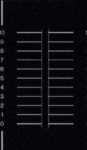

<!DOCTYPE html>
<html lang="en">
<head>
    <meta charset="UTF-8">
    <title>JSX可展开属性</title>
    <!--1.react库-->
    <script src="../react-0.13.0/build/react.min.js"></script>
    <!--2.解析jsx语法-->
    <script src="../react-0.13.0/build/JSXTransformer.js"></script>
    <!--组件样式-->
    <style>
        .ez-slider{
            position:relative;
            display:inline-block;
        }
        .ez-slider img.knob{
            position:absolute;
        }
    </style>
</head>
<body>
<div id="content"></div>
<script type = "text/jsx">
    //组件定义
    var EzSliderComp = React.createClass({
        //设置初始状态
        getInitialState : function(){
            return {
                moving : false, //标记是否在移动推子手柄
                oTop : 191, //在推子上按下鼠标时，推子手柄的top属性值
                left : 41,  //推子手柄的left属性值，保持不变
                top : 191,  //推子手柄的top属性值，根据鼠标位置变化
                value : 0.00 //根据推子手柄位置换算的0~10区间的值
            }
        },
        //在推子上按下鼠标时，设置moving标志
        onMouseDown : function(event){
            console.log("手指在推子上按下触发");
            console.log(event.target.className);
            if(event.target.className != "knob") return;//判断推子的样式类是不是knob
            this.setState({moving :true,oTop:this.state.top,y:event.clientY});//按下去时设置推子样式,y:event.clientY:设置推子按下的y坐标
            //moving :true：说明鼠标已经在推子上了
        },
        //如果moving标志已经置位，则根据鼠标位置设置推子手柄位置
        onMouseMove : function(event){
            //禁止浏览器默认行为
            event.preventDefault();
            console.log("手指悬停组件并且移动触发");
            //鼠标在组件上移动的时候，判断鼠标是否在推子上，就是根据moving这个状态判断的，不在就是false，取反就是true。然后退出
            if(!this.state.moving) return;

            //计算推子手柄位置
            var deltaY = event.clientY - this.state.y,
                nTop = this.state.oTop + deltaY,
                value = (10 - (nTop - 38)*10/(191-38)).toFixed(2);

            //如果推子手柄top值在有效范围内，设置推子位置和值
            if(nTop <= 191 && nTop >= 38){
                this.setState({top:nTop,value : value});
                this.props.onChange && this.props.onChange(value);
            }
        },
        //松开鼠标时，复位moving标志
        onMouseUp : function(event){
            this.setState({moving:false});
        },
        render : function(){

            //根据当前状态设置推子手柄位置和鼠标形状
            var knobStyle = {//设置初始化样式。把初始化状态的值，赋值给样式
                left : this.state.left,
                top : this.state.top,
                cursor : this.state.moving ? "pointer" : "default"//设置鼠标悬停推子，是否出现小手
            };
            //属性包
            var props = {
                className : "ez-slider",
                onMouseDown : this.onMouseDown,
                onMouseUp : this.onMouseUp,
                onMouseMove : this.onMouseMove
            };

            return 	<div {...props}>
                        
                        
                    </div>;
        }
    });
    //渲染
    React.render(
            <div>
                <EzSliderComp/>
                <EzSliderComp/>
                <EzSliderComp/>
                <EzSliderComp/>
            </div>,
            document.querySelector("#content"));

</script>
</body>
</html>